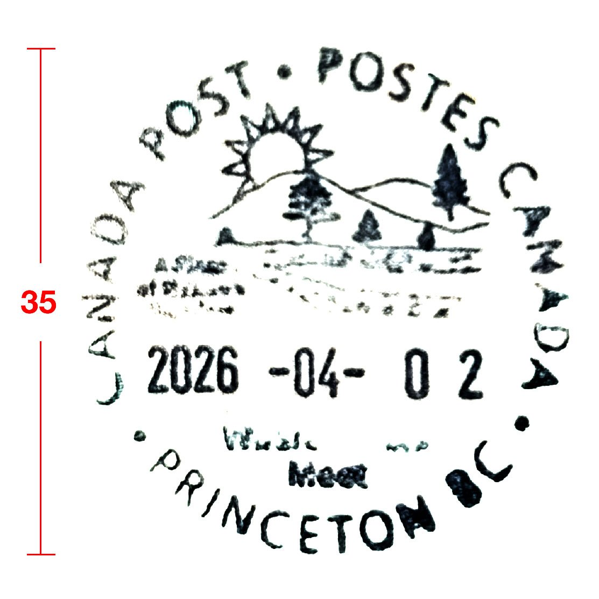

Princeton PO pictorial cancel
Where Rivers Meet
- Status
- Active
- Run dates
- ? to present
- Design
- "Where Rivers Meet"; sun, river, natural landscape
- Ink colour
- Black
- Designer
- Unknown
- Post office
- Princeton PO
185 Bridge St
Princeton, BC
V0X 1W0 - Subjects
- landscape, nature, tree, plant, river
Collect it by mail. Send your stamped covers, with a stamped return envelope, to the post office address above. How to collect pictorial cancels by mail · en français
 Towne Centre Card ShopOgopogo: a lake monster, fictional creature
Towne Centre Card ShopOgopogo: a lake monster, fictional creature Canada PostWilliam R. Bennet Floating Bridge / 2008-2018
Canada PostWilliam R. Bennet Floating Bridge / 2008-2018 Logan Lake POTrees, lake, fishes, farm, machinery, clouds
Logan Lake POTrees, lake, fishes, farm, machinery, clouds